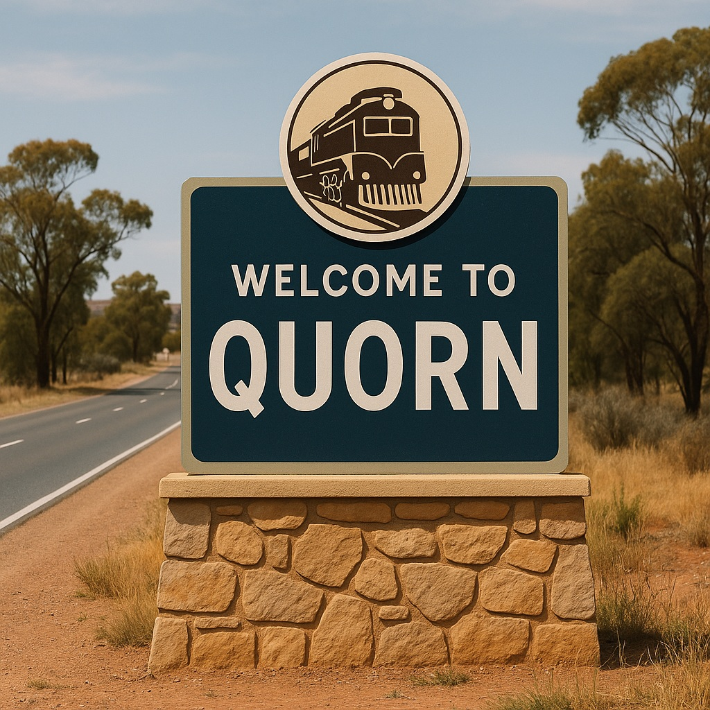

Flinders Gin
Visit a locally operated distillery in the heart of Quorn producing small-batch gin inspired by the flavours, plants and character of the Flinders Ranges.

Quorn is a historic railway town in South Australia’s Flinders Ranges, approximately 40 kilometres northeast of Port Augusta. Surrounded by rugged ranges, open plains and dramatic outback scenery, the town provides an inviting base for exploring the southern and central Flinders Ranges.
Established in 1878, Quorn developed into an important railway junction connecting Adelaide, Port Augusta and communities across northern South Australia. The movement of passengers, livestock, mail and supplies through the town helped make the railway central to Quorn’s economy and identity.
Quorn’s railway heritage remains visible throughout the town. Its historic station precinct, railway yards, bridges and preserved infrastructure tell the story of the people who constructed and operated transport routes through some of Australia’s most demanding country.
The town is best known as the home of the Pichi Richi Railway, which operates heritage train journeys through Pichi Richi Pass. The railway allows visitors to experience historic locomotives and carriages while travelling through striking Flinders Ranges scenery.
Quorn has also developed a strong connection with Australian film and television production. Its heritage streets, railway infrastructure and surrounding landscapes have provided settings for productions seeking an authentic outback environment.
Beyond the township, visitors can explore gorges, historic pastoral ruins, former railway settlements, walking trails, geological formations and scenic lookouts. Together, these places reveal the natural beauty and layered history of the wider Quorn district.
Visit a locally operated distillery in the heart of Quorn producing small-batch gin inspired by the flavours, plants and character of the Flinders Ranges.
Travel aboard a preserved steam or heritage diesel train through the spectacular Pichi Richi Pass. The railway follows part of the original route between Port Augusta and Quorn and offers one of Australia’s most memorable heritage railway experiences.
Explore Quorn’s extensive railway history through restored locomotives, carriages, equipment, photographs and interpretive displays connected with the former Great Northern Railway and Commonwealth Railways.
Watch Quorn’s silos come alive after sunset through projected images, animation and regional stories celebrating local heritage, landscapes, wildlife and community life.
A historic railway bridge on the Pichi Richi route that demonstrates the engineering required to carry the railway through the ranges and across the district’s seasonal waterways.
A privately operated pastoral property north of Quorn featuring rugged ranges, historic pastoral sites and designated four-wheel-drive routes. Access arrangements and fees should be confirmed before visiting.
A scenic vantage point overlooking Buckaringa Gorge and the surrounding Flinders Ranges landscape, where rocky ridges, creek lines and open country create an impressive outback panorama.
A prominent geological formation northeast of Quorn, recognised for its distinctive shape, exposed rock formations and walking routes through the surrounding conservation park.
A roadside lookout between Port Augusta and Quorn offering expansive views across Spencer Gulf, the coastal plain and the ranges surrounding Pichi Richi Pass.
A rural railway crossing along the heritage Pichi Richi route where visitors may see preserved trains passing through the open landscape during scheduled railway operations.
One of the Flinders Ranges’ most significant pastoral heritage sites, featuring the extensive stone ruins of a nineteenth-century sheep station, homestead complex and supporting settlement.
A surviving railway bridge associated with the historic rail corridor through the Quorn district, set among the creek lines and arid landscapes of the southern Flinders Ranges.
Follow a self-guided route through Quorn’s historic railway precinct to view preserved buildings, rail infrastructure and interpretive material explaining the town’s former importance as a major railway junction.
A former railway settlement south of Quorn in Pichi Richi Pass. Surviving traces of the settlement and railway corridor provide insight into the small communities once supported by the region’s rail network.
The site of an abandoned nineteenth-century settlement north of Quorn. Its isolated location and limited surviving remains reflect the ambitions and difficulties of establishing inland communities in arid country.
A rugged gorge northeast of Quorn featuring dramatic rock walls, walking opportunities and habitat for yellow-footed rock-wallabies. Road and access conditions should be checked before travelling.
The site of a former township associated with railway and pastoral development in the Flinders Ranges. Its remaining structures and traces illustrate the changing fortunes of early regional settlements.
A former railway settlement between Quorn and Hawker where remnants of earlier occupation help tell the story of rail transport, settlement and pastoral activity in the region.
A heritage railway bridge spanning Wirreanda Creek and forming part of the wider network of historic railway infrastructure surrounding Quorn.
Planning a visit to Quorn? Explore hotels, motels, hosted accommodation and caravan parks in and around this historic railway town while discovering the landscapes and heritage of the southern Flinders Ranges.
ShowcasingOz TV is designed to do more than help travellers find a place to stay. We help visitors discover where to go, what to experience and where to base themselves while exploring Australia’s regional communities.
Accommodation partners featured on ShowcasingOz TV receive premium exposure through professionally produced video, photography and destination-led storytelling that places their property in front of travellers actively planning where to stay.
Explore Accommodation Filming & Feature Options
This list is provided for visitor awareness only. Inclusion does not imply partnership or endorsement. Accommodation availability and booking options may change. Some links on this page are affiliate links, which means ShowcasingOz TV may earn a small commission if you make a booking, at no additional cost to you.